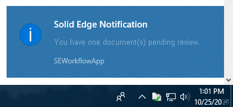
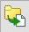

Review documents
If you receive a notification that you were assigned a workflow task, you can review and change the status of documents as explained next. If you are not able to review the documents, and you are a document controller, you can delegate the task to someone else, as explained in Delegate workflow tasks.
The notification you receive is a system notification, similar to the following:

If the workflow initiator added your email to the Email Notification list, you will also receive an email notification.
You do not need to launch Solid Edge to approve or reject a workflow.
-
Choose Start menu→Siemens Solid Edge 2023→Workflow Notification.
Solid Edge displays the workflow application as an icon in the notification area, also known as the system tray, .
Note:If you do not see the workflow icon in the system tray, be sure it is not hidden under the Show hidden icons option .
-
Double-click the workflow application icon.
Note:If no workflows are listed, click the Refresh button to refresh the view.
It can take a few minutes for a newly assigned workflow to be received.
-
Before you decide whether to approve or reject a workflow, you can:
-
View the list of affected files by clicking the Affected files button

.The system displays the affected files in an Excel spreadsheet.
-
Select a document, right-click, and choose if you want to first open the document in Solid Edge or Design Manager.
Note:You can also approve or reject the document from the shortcut menu that is displayed when you right-click the document.
-
-
In the Solid Edge Workflow Notification dialog box, use the approve or reject buttons to approve or reject the workflow.
If you reject the workflow, the system resets the document status to Available.
If you approve the workflow, the system sets the document status to Released. In addition, if you defined locations for release management, the system saves the documents in the locations you specified. Otherwise, it saves the documents in the same location from which you opened them.